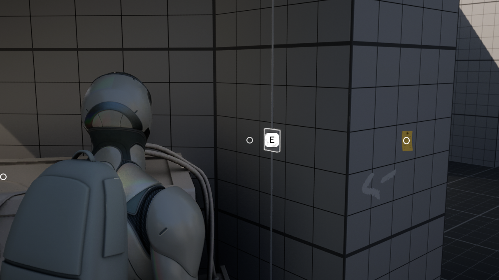

快速开始：把示例工程跑起来
从打开工程到做出第一个能按 E 捡起来的物品。这一章不讲原理，只保证你在半小时内看到东西动起来。
这一章的目标很朴素：让你亲眼看到它跑起来。不要急着理解每个节点—— 先玩一遍示例地图，知道“原来它长这样”，后面读原理时脑子里才有画面。
开始前，确认三件事
| 检查项 | 怎么确认 | 不满足怎么办 |
|---|---|---|
| 引擎版本 | 启动器里装有 UE 5.6（5.1–5.6 均可，文档以此区间为准） | 去 Epic 启动器 → 虚幻引擎 → 库 → 添加版本 |
| 工程来源 | Fab 库里已购买 → 「添加到工程」或在启动器「库」里下载完整示例工程 | SF 是付费资产，需在 Fab 页面购买 |
| 磁盘空间 | 预留 10 GB 以上（示例工程含演示关卡、动画与音频） | 先清一清 DerivedDataCache |
Fab 上的资产分两种交付方式：一种是一个完整工程（打开就是一个能玩的游戏）； 另一种是可以添加进你现有工程的资产包。 SF 两种都有：作者建议先下载完整工程（里面有示例地图和演示关卡），玩明白之后再考虑把它迁移进你自己的项目。 迁移的详细步骤在 第 8 章。
第一步：打开工程
-
用 5.6 打开
双击
.uproject，或在启动器里选择版本 5.6 后打开。 如果提示「此项目是为较旧版本创建的」，选择转换副本（Convert a copy），保留原始工程做备份。 - 等编译着色器 首次打开会长时间停在「Compiling Shaders」。这是正常的，去泡杯茶；中途不要强关。
-
打开示例地图
在内容浏览器里进入
StoryFramework文件夹，找到示例关卡（名称通常含Example/Demo），双击打开。 如果引擎自动打开了别的关卡，用File → Open Level手动选。 - 点 Play 按 Alt+P 或点工具栏的 ▶。现在你就是一个拿着手电的探险者了。
第二步：在示例地图里“逛一圈”
示例地图是这套框架最重要的教材——官方文档里说“示例里有例子”的地方，全部都能在这里找到实物。 建议按下面的顺序体验，每个都亲手做一遍：

| 体验内容 | 你会看到 | 对应系统 |
|---|---|---|
| 走到一个物品前 | 屏幕出现按键提示与物品名；物体有描边高亮 | 交互系统 · 提示 |
| 按交互键拾取 | 物品消失，右下角提示“已加入背包” | 快捷背包 |
| 打开背包 | 底部工具栏式背包，可切换、使用、组合、丢弃 | 快捷背包 |
| 捡起一张纸条、按检视键 | 物品浮到镜头前，可旋转；或出现可翻页的文字 | 检视（Inspect） |
| 打开日志 / 回忆录 | 3D 检视的条目、剧情选择记录 | 日志 & 回忆录 |
| 看右上角 | 当前任务标题、倒计时（若有） | 任务系统 |
| 和 NPC 对话 | 镜头切换、字幕、若干回复选项 | 对话系统 |
| 触发一次 QTE | 屏幕中央出现按键与倒计时 | 快速反应事件 |
| 做一个重大选择 | 全屏两个选项，选择后画面淡出 | 故事选择 |
| 走进某个区域 | 自动播放语音、弹出教学提示、或切到固定镜头 | 触发器体积 |
每看到一个效果，就按 F8 退出 Play，然后在关卡里选中那个物体，看它的细节面板。
示例地图里的每一个可交互物，都是一个继承自 InteractableBase_BP 的蓝图实例——
它们的差别，全在细节面板里那几个字段。这是理解 SF 最快的路径。
按键在哪改？
SF 用的是 UE5 的增强输入（Enhanced Input）：一套输入动作（Input Action）+ 若干输入映射上下文（IMC）。 默认按键不在代码里，而在资产里：
StoryFramework / Core / Input / → SFGameplay_IMC（游戏中的常规操作）
Inventory_IMC（打开背包时切换）
WidgetMenu_IMC（打开菜单时切换）
双击对应的 IMC，就能看到每个动作绑定了哪个键，也可以直接改。
SF 的一个重要设计是：打开背包时会把 Gameplay_IMC 换成 Inventory_IMC，
这样同一个键在不同界面下可以干不同的事，也不会互相冲突。
社区教程提到：C 可在第一/第三人称之间切换（手柄为长按 Y）。
其余按键（交互、背包、日志、跳过对话）请直接查看 SFGameplay_IMC，以你手上的版本为准。
第三步：做你的第一个可交互物体
现在离开示例，自己造一个能捡起来的东西。整个过程约 5 分钟：
-
新建蓝图子类
在内容浏览器空白处右键 →
Blueprint Class→ 展开All Classes→ 搜索InteractableBase_BP→ 选中它创建。 命名为BP_MyFirstItem，放进你自己的文件夹（不要直接改 SF 原始资产）。 -
给它一个外形
打开蓝图，选中
StaticMesh组件（基类里已经带好），在细节面板把Static Mesh换成任意一个立方体或瓶子。 如果是SkeletalMesh（骨骼网格），也支持，用于需要物理摆动的物体。 -
填写交互数据
在细节面板找到
Interaction Data（一个结构体，叫InteractableData_S）。展开后先设置这三个：字段 含义 建议值 Object Name物品名，会显示在提示与背包里 “生锈的钥匙” Primary Interaction Method主交互方式 Quick Pickup（快速拾取）Secondary Interaction Method附加交互（可选） Inspect或None -
设置背包图标（Quick Pickup 专有）
在同一结构体里找到
Pickup Method Settings→Item Inventory Icon，指定一张 2D 贴图。 这一项不填，背包里就是一个空方块——不影响功能，但很难看。 - 拖进关卡并测试 把蓝图拖进场景，Alt+P 进入游戏，走过去看向它：应该出现按键提示；按下后物品消失、进入背包。
- 碰撞体没设：交互靠一条射线（Trace）打到物体，物体必须有碰撞。检查网格组件的
Collision Presets是否为BlockAll或至少阻挡可见性/交互通道。 - 距离太远：交互管理器组件上有交互距离（Reach）参数，默认值有限，站近一点试。
- 被“软锁”了：如果物体带着
SoftLocked这个 Actor Tag，它会主动隐藏提示并禁止交互。这是用法，不是 Bug。 - 项目设置缺通道：如果你是在自己的工程里做（不是示例工程），必须先在碰撞设置里加
SFInteraction追踪通道，否则一切都不响应。见 迁移章节。
工程目录：东西都在哪
打开内容浏览器，SF 的资产集中在 StoryFramework 文件夹下，结构大致如下：
StoryFramework/
├── Core/
│ ├── Blueprint/
│ │ ├── Components/ ← 五大管理器组件（重点）
│ │ │ ├── Core/ ← Interaction / Inventory / Sequence / Save / Camera Manager
│ │ │ └── Other/ ← 相机组件 SFDefaultCamera_CC 等
│ │ ├── Data Tables/ ← 道具组合、回忆录、NPC 叫声、按键样式
│ │ ├── Structures/ ← 各种 _S 结构体（TaskInfo_S 等）
│ │ └── Function Libraries/ ← 一堆可复用的蓝图函数
│ ├── User Interface/
│ │ ├── Widgets/ ← 交互提示、输入按键、菜单
│ │ └── ...
│ ├── Input/ ← IMC / Input Action
│ └── Example/
│ └── Level/ ← 示例地图与其专用 Actor（触发器、道具）
└── ...（演示用美术资源）
SF 自带一个编辑器工具栏（Editor Utility Widget），能把一堆散落的设置集中到一个面板里，还能一键跳到核心组件。
它需要在 Project Settings → Plugins → Python 的 Startup Scripts 里挂一段脚本（可选步骤，不装也能用）。
详细做法见 第 2 章 · 编辑器工具。
本章检查清单
| ✓ | 你应该已经做到 |
|---|---|
| □ | 用 UE 5.6 打开了示例工程，并成功进入 Play |
| □ | 在示例地图里体验过拾取、检视、对话、任务、QTE、故事选择 |
| □ | 知道默认按键在 SFGameplay_IMC 里改 |
| □ | 做出了一个继承自 InteractableBase_BP 的、能捡起来的物品 |
| □ | 知道五大管理器组件在 Core/Blueprint/Components/Core 下 |
下一步，我们把这套东西的“骨架”讲清楚——为什么它要拆成五个组件，以及你怎么在任意蓝图里调用它们。